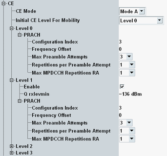

The parameters in this section configure the coverage enhancement (CE) levels and modes.

Selects the coverage enhancement mode. The information is signaled to the UE during the random access procedure, via the field "ce-Mode-r13".
Before the UE receives this message, it can use a different CE mode for the random access procedure, depending on the other settings in this section.
Currently, only CE mode A is supported.
Remote command:Selects the initial CE level for a random access procedure during a redirection.
The information is signaled to the UE via the field "initial-CE-level-r13". "Selected by UE" means that the field is omitted.
Without redirection, this setting is irrelevant. See "Q rxlevmin" instead.
Remote command:CE levels supported by the eNodeB for PRACH. The UE selects one of these levels, see "Q rxlevmin".
A higher CE level means a higher coverage enhancement (for example more repetitions / higher power). If the UE selects CE level 0 or 1, it uses CE mode A. With CE level 2 and 3, it uses CE mode B.
Selects whether the eNodeB supports the CE level. Level 0 is always supported.
If you disable a level, the higher levels are disabled automatically.
Remote command:Threshold for selection of a CE level by the UE. The UE compares the measured RSRP to the configured "Q rxlevmin" values and selects the CE level accordingly.
With increasing CE level, the "Q rxlevmin" setting must decrease. CE level 0 has no "Q rxlevmin" setting. It can be used by the UE for all RSRP levels larger than the "Q rxlevmin" of CE level 1.
The "Q rxlevmin" is configured in dBm. The system information field "q-RxLevMinCE-r13" contains the configured value divided by two.
Remote command:This node configures settings for the random access procedure with coverage enhancement.
All settings are configurable per PRACH CE level. All settings for all CE levels are signaled to the UE via the field "PRACH-ParametersListCE-r13".
Sets the PRACH configuration index. The configuration index defines the preamble format and other PRACH signal properties. The setting is signaled to the UE via the field "prach-ConfigIndex-r13".
For details, see 3GPP TS 36.211, section 5.7.1 "Time and frequency structure".
Remote command:The frequency offset is used by the UE to calculate the location of the preamble resource blocks within the cell bandwidth. The setting is signaled to the UE via the field "prach-FreqOffset-r13".
For details, see "prach-FrequencyOffset" in 3GPP TS 36.211, section 5.7.1 "Time and frequency structure".
Remote command:Specifies the maximum number of preamble transmission attempts within one CE level. The UE increases the power for each attempt (as long as the maximum power is not yet reached).
After the maximum number of attempts, the UE can increase the CE level.
The setting is signaled to the UE via the field "maxNumPreambleAttemptCE-r13".
Remote command:Specifies the number of repetitions per preamble transmission attempt (repetitions with same preamble and power).
The setting is signaled to the UE via the field "numRepetitionPerPreambleAttempt-r13".
Remote command:Specifies the maximum number of MPDCCH repetitions for the random access response.
The setting is signaled to the UE via the field "mpdcch-NumRepetition-RA-r13".
Remote command: